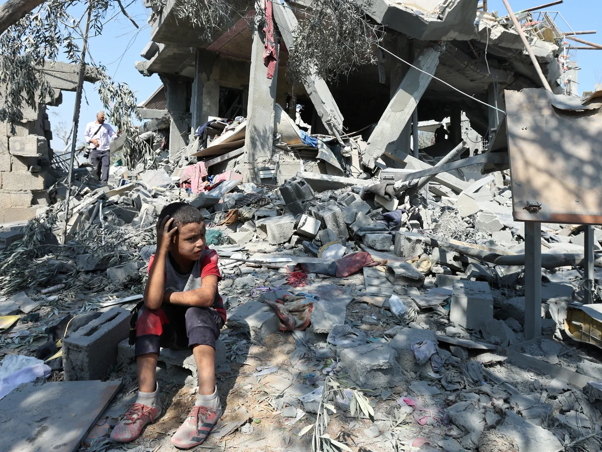

kIDS iN gAZA

The war in the Gaza Strip is taking a catastrophic toll on children. More than 14,000 children have reportedly been killed, according to the latest estimate by the Palestinian Ministry of Health; thousands more have been injured. There are no safe spaces. All of Gaza’s children have been exposed to the traumatic experiences of war, the consequences of which will last a lifetime.
Around 1.9 million people – about 9 in 10 of Gaza’s population – are estimated to have been internally displaced. Half of them children. They do not have enough access to water, food, fuel and medicine. Their homes have been destroyed; their families torn apart. Many children have been displaced multiple times, and have lost homes, parents and loved ones. They need to be protected, along with the remaining services that they rely on, including medical facilities and shelter.
Gaza’s children have endured unimaginable horrors – they deserve an immediate ceasefire and a chance for a peaceful future.